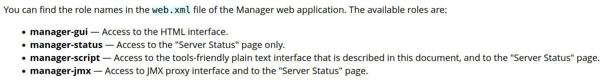
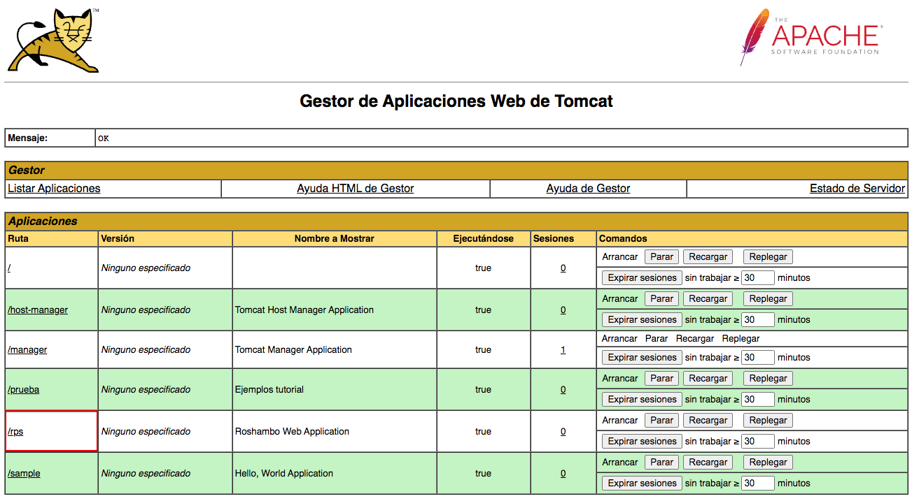
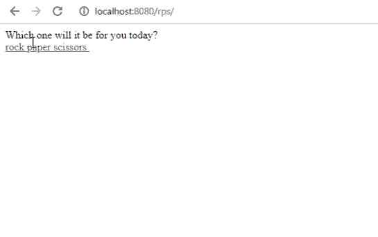

Práctica 3: Despliegue en Tomcat con Maven
Apache Maven es una herramienta de gestión de proyectos ampliamente utilizada en el desarrollo de software. Proporciona una forma eficiente de administrar la construcción, el ciclo de vida y las dependencias de proyectos Java y otros lenguajes de programación. Con Maven, los desarrolladores pueden automatizar la compilación, la prueba y la distribución de sus proyectos, lo que simplifica el proceso de desarrollo y garantiza la consistencia en la gestión de proyectos a lo largo del tiempo. Además, Maven facilita la colaboración en proyectos de código abierto al proporcionar una forma estándar de compartir y gestionar bibliotecas y dependencias.
Al integrar Maven con Tomcat, se obtiene una forma eficiente de administrar y desplegar aplicaciones web Java en un servidor Tomcat. Maven facilita la gestión de dependencias, la construcción de proyectos y la automatización de tareas de despliegue, lo que agiliza el ciclo de desarrollo y garantiza una gestión más consistente de las aplicaciones web en el servidor Tomcat.
Instalación de Maven
Para instalar Maven en nuestro Debian tenemos, de nuevo, dos opciones:
-
Instalación mediante gestor de paquetes APT
-
Instalación manual
La primera, recomendada, es mucho más sencilla y automatizada (establece todos los paths y variables de entorno), aunque con la segunda se podría conseguir un paquete más actualizado.
Ambos métodos vienen explicados aquí
Si decidimos seguir el primer método, el más sencillo, vemos que es tan simple como actualizar los repositorios:
E instalar Maven
Para comprobar que todo ha ido correctamente, podemos ver la versión instalada de Maven:Pero antes de pasar a integrar Tomcat con Maven hemos de tener algunos conocimientos básicos de Maven. Para ello realizaremos esta breve práctica: Maven in 5 minutes. Aquí aprenderemos conceptos básicos cómo:
- Cómo crear un proyecto
- La estructura de carpetas de un proyecto
- El fichero POM
- Compilar un proyecto
- Las fases de un proyecto
No intentes seguir la práctica sin haber comprendido antes todo lo anterior o no sabrás qué estás haciendo
Configuración de Maven
Para poder realizar despliegues en nuestro Tomcat previamente instalado, necesitamos realizar la configuración adecuada para Maven. Ya sabemos que esto en Linux significa editar los archivos de configuración adecuados. Vamos a ello.
1.Creación de usuario para Maven
En primer lugar necesitamos asegurarnos de que en el apartado anterior de la práctica hemos añadido todos los usuarios necesarios, así como sus respectivos roles. Ahora debemos añadir el rol de manager-script para permitir que Maven se autentique contra Tomcat y pueda realizar el despliegue.
Los roles utilizados por Tomcat vienen detallados en su documentación, que merece ser consultada:

En dicha documentación se nos indica que, por temas de seguridad, es recomendable no otorgar los roles de manager-script o manager-jmx al mismo usuario que tenga el rol de manager-gui.
Info
Tendremos dos usuarios, uno para la GUI y otro exclusivamente para hacer los deploys de Maven.
Así las cosas, modificamos el archivo /etc/tomcat10/tomcat-users.xml acorde a nuestras necesidades. Añadiremos un usuario "despliegues" con password "ieselcaminas":
<role rolename="admin-gui"/>
<role rolename="manager-gui"/>
<role rolename="manager-script"/>
<user username="admin" password="ieselcaminas" roles="admin-gui,manager-gui"/>
<user username="despliegues" password="ieselcaminas" roles="manager-script"/>
Como hemos hecho cambios en la configuración de Tomcat deberemos reiniciarlo
2.Indicar a Maven sobre el servidor que vamos a desplegar (en nuestro caso TOMCAT)
Editar el archivo /etc/maven/settings.xml para indicarle a Maven un identificador para el servidor sobre el que vamos a desplegar. No es más que un nombre, le pondremos DesplieguesTomcat, pero podría ser cualquier cosa. El usuario y password serán los que definimos antes en tomcat-users.xml. Todo esto se hará dentro del bloque servers del XML:
<server>
<id>DesplieguesTomcat</id>
<username>despliegues</username>
<password>ieselcaminas</password>
</server>
Ya tenemos Maven y Tomcat preparados para trabajar juntos. Veamos cómo desplegar ahora un proyecto.
Despliegue de un proyecto ya preparado.
Empezaremos desplegando un proyecto que ya está preparado para ser desplegado con Maven. Para ello clonaremos el proyecto "rock-paper-scissors" de GitHub. Colócate en un directorio de tu elección y ejecuta lo siguiente. Igual tienes que instalar git antes, pero ya sabes cómo hacerlo.
Como ya vimos en el taller de Git, estamos clonando un proyecto de GitHub y colocándonos en la rama patch-1. Ten en cuenta el comando para cambiar a la rama patch-1. La rama master compilará en un archivo JAR integrado, lo cual no es lo que deseamos aquí. En su lugar, queremos que el proyecto compile en un archivo WAR para implementarlo en Tomcat con Maven.
Ahora debemos modificar el POM del proyecto para que haga referencia a que el despliegue se realice con el plugin de Maven para Tomcat.
Info
No existen plugins oficiales para Tomcat más allá de la versión 7 del servidor. No obstante, el plugin para Tomcat 7 sigue funcionando correctamente con Tomcat 9.
Otra opción sería utilizar el plugin Cargo
Donde lo que añadimos es el bloque <plugin> dentro del bloque <plugins>.
<build>
<finalName>roshambo</finalName> #(1)
<plugins>
<plugin>
<groupId>org.apache.tomcat.maven</groupId>
<artifactId>tomcat7-maven-plugin</artifactId>
<version>2.2</version>
<configuration>
<url>http://localhost:8080/manager/text</url> #(2)
<server>DesplieguesTomcat</server> #(3)
<path>/rps</path> #(4)
</configuration>
</plugin>
</plugins>
</build>
-
Nombre final del ejecutable que se va a generar. No has de cambiarlo
-
URL del servidor Tomcat donde se hará el despliegue. Como en nuestro caso Maven y Tomcat están en el mismo servidor, la URL corresponde a localhost. Esta URL debe ir seguida por
/manager/text, tal y como leemos en la documentación del plugin. Esto no hemos de modificarlo. -
Nombre del server donde se va a desplegar la aplicación. El nombre debe ser consistente con lo que hayamos puesto en el
settings.xmldel paso anterior. -
Nombre que la aplicación utilizará en el path de la URL
El paso final consiste en ejecutar un "build" de Maven mientras también invocas la función de implementación del complemento Tomcat-Maven, lo cual puedes hacer con el siguiente comando:
mvn tomcat7:deploy
Si todo va bien responderá algo así:
[INFO] Deploying war to http://localhost:8080/rps
Uploading: http://localhost:8080/manager/text/deploy?path=%2Frps
Uploaded: http://localhost:8080/manager/text/deploy?path=%2Frps (11 KB at 2586.4 KB/sec)
[INFO] tomcatManager status code:200, ReasonPhrase:
[INFO] OK - Deployed application at context path [/rps]
[INFO] ------------------------------------------------------------------------
[INFO] BUILD SUCCESS
[INFO] ------------------------------------------------------------------------
[INFO] Total time: 6.256 s
[INFO] Finished at: 2023-09-10T18:41:06Z
[INFO] ------------------------------------------------------------------------
Fíjate que informe que está desplegando el war. Y que es un BUIL SUCCESS.
Después de ejecutar el comando de instalación de Maven, notarás que sucedieron dos cosas muy interesantes:
- Se ha guardado un archivo llamado "rps.war" en el directorio webapps de Tomcat
/var/lib/tomcat10/webapps. - La carpeta webapps tiene un nuevo subdirectorio llamado "rps".
La nueva aplicación te aparecerá en el Gestor de Aplicaciones Web de Tomcat.

Y si la ejecutamos podremos comprobar su funcionamiento. Se trata del famoso juego piedra-papel-tijeras.

Como referencia, los comandos que se utilizan en Maven para desplegar, volver a desplegar o replegar una aplicación, son:
mvn tomcat7:deploymvn tomcat7:redeploymvn tomcat7:undeploy
Despliegue de un proyecto nuevo
En el paso anterior hemos desplegado un proyecto que hemos descargado de GitHub y que ya estaba preparado para ser desplegado con Maven. Ahora vamos a crear una una aplicación Java de prueba desde cero para ver si podemos desplegarla sobre la arquitectura que hemos montado.
Para ello colócate en el directorio en el que quieras crear la estructura de carpetas de Maven y ejecuta el comando:
mvn archetype:generate -DgroupId=IESElCaminas -DartifactId=miapp -DarchetypeArtifactId=maven-archetype-webapp -DinteractiveMode=false
Podéis sustituir los valores de groupID (nombre organización) y artifactId (nombre de la aplicación) por lo que queráis.
Comprueba que se ha creado un directorio miapp donde habías ejecutado el comando. Entra dentro y comprueba que tienes el archivo pom.xml y el directorio src. Edita el POM e incluye la sección del plugin de tomcat7-maven en la sección de <plugins> como en el caso anterior. En este caso, además, deberemos incluir el plugin "maven-war" que nos permitirá compilar un archivo .war compatible con el plugin tomcat7-maven. Por tanto, incluiremos 2 bloques <plugin> dentro de la sección <plugins>:
<build>
<finalName>miapp</finalName>
<plugins>
<plugin>
<groupId>org.apache.maven.plugins</groupId>
<artifactId>maven-war-plugin</artifactId>
<version>3.4.0</version>
</plugin>
<plugin>
<groupId>org.apache.tomcat.maven</groupId>
<artifactId>tomcat7-maven-plugin</artifactId>
<version>2.2</version>
<configuration>
<url>http://localhost:8080/manager/text</url>
<server>DesplieguesTomcat</server>
<path>/miapp</path>
</configuration>
</plugin>
</plugins>
</build>
Ya puedes desplegar la aplicación con
mvn tomcat7:deploy
Comprueba nuevamente que puedes verla en el Gestor de Aplicaciones Web de Tomcat y que puedes ejecutarla. En este caso es un simple "Hello world!". Navega la estructura de directorios que Maven ha creado en el directorio miapp. Fíjate cómo es la misma que creamos manualmente en la práctica anterior. Y compara el proceso que seguimos en la anterior práctica creando y editando el fichero index.html, web.xml, compilando la aplicación para generar el .war, etc. Maven ha hecho todo eso por nosotros con un solo comando mvn tomcat7:deploy.
Para saber más
Hemos usado el plugin tomcat7-maven para realizar los despliegues. Pero no es el único. Otro plugin, de funcionamiento parecido es "cargo".
En este enlace tienes un ejemplo de cómo realizar un despliegue utilizando "cargo":
How to deploy the java application to Tomcat 9 webserver using Maven
Cuestiones
Habéis visto que los archivos de configuración que hemos tocado contienen contraseñas en texto plano, por lo que cualquiera con acceso a ellos obtendría las credenciales de nuestras herramientas.
En principio esto representa un gran riesgo de seguridad, ¿sabrías razonar o averigüar por qué esto está diseñado de esta forma?
Referencias
JSF 3.0 en Tomcat 10 con Java 11
Install and configure jdk11 + Tomcat + Maven under Linux system
Step-by-step Maven Tomcat WAR file deploy example
How to Install Apache Maven on Debian 11 Bullseye
How to Deploy a WAR File to Tomcat
Migrate Maven Projects to Java 11
How to configure Tomcat 9.0 in Maven
Github: cameronmcnz/rock-paper-scissors